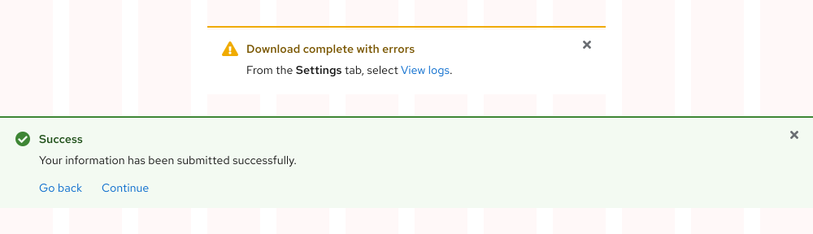
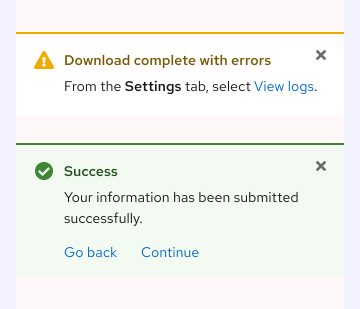

Alert
Guidelines
An alert is best used to notify a user of a change or attract their attention about other messages.
Using an inline alert
An Inline alert is used to present a local message or return feedback as the result of a user action, like if a form is submitted with errors.
Using a toast alert
A Toast alert is used to present a global message about an event, update, or confirmation, like the result of a user action that cannot be presented within a specific layout or component.
Severity
Severity communicates the urgency of a message and is denoted by various styling configurations.
- Default - Indicates generic information or a message with no severity.
- Info - Indicates helpful information or a message with very little to no severity.
- Success - Indicates a success state, like if a process was completed without errors.
- Warning - Indicates a caution state, like a non-blocking error that might need to be fixed.
- Danger - Indicates a danger state, like an error that is blocking a user from completing a task.
Learn More
Visit the Color foundation page to learn more about how to use colors for status and severity.

Dismissal
Alert variants have different rules regarding their ability to be dismissed by a user.
- Default, Info, and Success Inline alerts can be dismissed by a user selecting the close button.
- Warning and Danger Inline alerts can be dismissed by a user resolving the issues caused by the alert.
- All Toast alerts can be dismissed by a user selecting the close button or waiting for them to time out.
Warning
If an issue cannot be resolved on the current page or if a user needs to correct a situation outside of the experience, use a Dialog instead.

Writing Content
Title
The title should fit on one line at any screen size and would typically be only one to three words, if the alert includes body text. If the alert does not contain body text, however, the title can be a concise, full sentence. The title can also communicate the severity of the alert, e.g. "Warning" or "Success".
Character count
| Element | Character count |
|---|---|
| Title | 60 |
Body
The body would ideally be one brief sentence. This is especially important for toast alerts because users may receive more than one at a time. Not all alerts will require body text if the title is enough to convey the message.
Positioning
Inline
An Inline alert can be placed toward the top of a layout if the message applies globally or inline near specific content if the message applies locally. Depending on where they are used, an Inline alert can span the width of a grid or container, so there is no set width.


Toast
A Toast alert slides in from the top right edge of the screen and overlaps any content underneath. They can be set as persistent or temporary depending on the message that needs to be communicated to a user.
- Persistent - Set if the content will be relevant after a task is complete.
- Temporary - Set if the content will be be acknowledged and no longer relevant.
If a Toast alert is set to persistent, a close button needs to be included so a user can dismiss the alert if desired.

If a Toast alert is set to be temporary or time out, the alert will disappear after eight seconds. A user might want to dismiss the alert before then, in which case a close button needs be included.

Behavior
Stacking
When multiple Toast alerts are triggered around the same time, they will stack on top of each other. The most recent alert is placed at the top of the stack and pushes the other alerts down. When stacked Toast alerts are dismissed by a user or time out, the remaining alerts will slide up and fill the empty space.


Responsive design
Large screens
The maximum width of a Toast alert on large screens is six grid columns.

Small screens
On small screens, both alert variants will span the full column of the layout. Toast alerts will continue to stack on top of each other, so be mindful of how much vertical space the group will occupy if multiple Toast alerts need to be displayed.

Best practices
Inline as Toast
Do not use an Inline alert to communicate messages about important events, updates, or confirmations.
Toast as Inline
Do not use a Toast alert to present simple information or inline messages.
Different variants
Do not use both variants when stacking.
Feedback
To give feedback about anything on this page, contact us.
Foundations
To learn how to use our other components in your designs, visit the Elements section.
Red Hat legal and privacy links
- About Red Hat
- Jobs
- Events
- Locations
- Contact Red Hat
- Red Hat Blog
- Diversity, equity, and inclusion
- Cool Stuff Store
- Red Hat Summit
Red Hat legal and privacy links